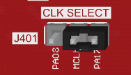

Using the Bluetooth Audio Development Kit and the PIC32MZ EF Audio PIM with the AK4954 Audio Codec Daughter Board and I2S PLIB. Plug the PIM onto the center square connector P1. Double-check to make sure the pins are aligned correctly. The AK4954 daughter board is plugged into the rear set of X32 connectors (J9/J10). Switch S1 on the PIC32 Bluetooth Audio Development Board (between the audio codec daughter board and the microcontroller PIM) should be set to PIM_MCLR.

 |
Note: |
The Bluetooth Audio Development Kit does not include the either the PIC32MZ EF Audio PIM or the AK4954 Audio Codec daughterboard, which are sold separately on microchipDIRECT as part numbers MA320018 and AC324954 respectively. |
Using the SAM E54 Curiosity Ultra board and the WM8904 Audio Codec Daughter Board, and the I2S PLIB. All jumpers on the WM8904 should be toward the front:

In addition, make sure the J401 jumper (CLK SELECT) is set for the PA17 pin:

|
|
Note: |
The SAM E54 Curiosity Ultra board does not include the WM8904 Audio Codec daughterboard, which is sold separately on microchipDIRECT as part number AC328904. |
Using the SAM E70 Xplained Ultra board and the AK4954 Audio Codec Daughter Board, and the SSC PLIB. No special configuration needed.
|
|
Note: |
The SAM E70 Xplained Ultra board does not include the AK4954 Audio Codec daughterboard, which is sold separately on microchipDIRECT as part number AC324954. |
Using the SAM E70 Xplained Ultra board and the WM8904 Audio Codec Daughter Board, and the I2SC PLIB. All jumpers on the WM8904 should be toward the back:

|
|
Note: |
The SAM E70 Xplained Ultra board does not include the WM8904 Audio Codec daughterboard, which is sold separately on microchipDIRECT as part number AC328904. |
Using the SAM E70 Xplained Ultra board and the AK4954 Audio Codec Daughter Board, and the SSC PLIB and the 480x272 display.
- Attach the flat cable of the PDA TM4301B 480x272 (WQVGA) display to the 565 daughterboard connected to the SAM E70 Xplained Ultra board GFX CONNECTOR.
- Add a jumper from connector EXT1 pin 13 to J601 (CAMERA INTERFACE) pin 14 as shown:

The WM8904 Audio Codec Daughter Board will be using the SSC PLIB; all jumpers on the WM8904 should be toward the front:
|
|
Note: |
The SAM E70 Xplained Ultra board does not include the PDA TM4301B 480x272 (WQVGA) display, which is sold separately on microchipDIRECT as part number AC320005-4, or the WM8904 Audio Codec daughterboard, which is sold separately on microchipDIRECT as part number AC328904. |
Using the SAM V71 Xplained Ultra board with on-board WM8904, with the SSC PLIB. No special configuration needed.
|
MPLAB Harmony Audio Help
|